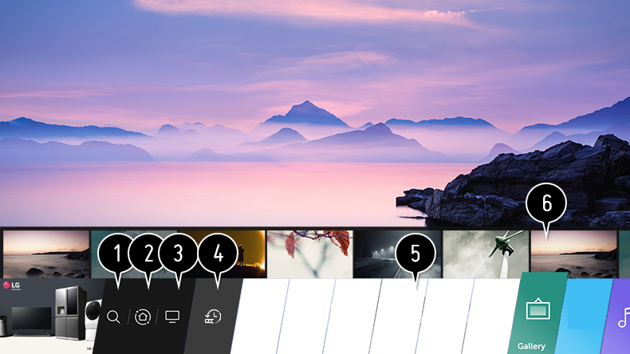

Uso de la función de inicio de LG webOS TV
Puede abrir la pantalla de inicio pulsando el botón  del mando a distancia.
del mando a distancia.
Podrá combinar las aplicaciones utilizadas con más frecuencia en una única pantalla y elegir la que desee en cualquier momento.
del mando a distancia.
Podrá combinar las aplicaciones utilizadas con más frecuencia en una única pantalla y elegir la que desee en cualquier momento.

-
Inicie Búsqueda.
Para ver los detalles, Cómo usar varios contenidos Buscar contenido en Guía del usuario. -
Vaya a Panel de casa.
Puede seleccionar o controlar un dispositivo (móvil, dispositivo externo, Dispositivos IoT para Home, etc.) conectado a la TV.
Para obtener más información, consulte Conexión de otros dispositivos Panel de casa en Guía del usuario. - Vaya a la entrada de TV que ha usado recientemente.
-
Vaya a la aplicación que ha usado recientemente.
Mantenga pulsado el botón del mando a distancia o vaya a Recientes.
Puede abrir o cerrar una aplicación usada recientemente en la lista proporcionada en la zona de Vista previa de la parte superior. - Puede ejecutar, mover y eliminar las aplicaciones instaladas en la TV.
-
Seleccione cada parte de la aplicación. En la parte superior se proporciona una Vista previa.
Puede comprobar o ejecutar funciones útiles de cada aplicación y contenido recomendado en la Vista previa sin necesidad de entrar en la aplicación.Es posible que algunas aplicaciones no proporcionen Vista previa.
La disponibilidad y el acceso a los contenidos y servicios del dispositivo LGE están sujetos a cambios en cualquier momento y sin previo aviso.